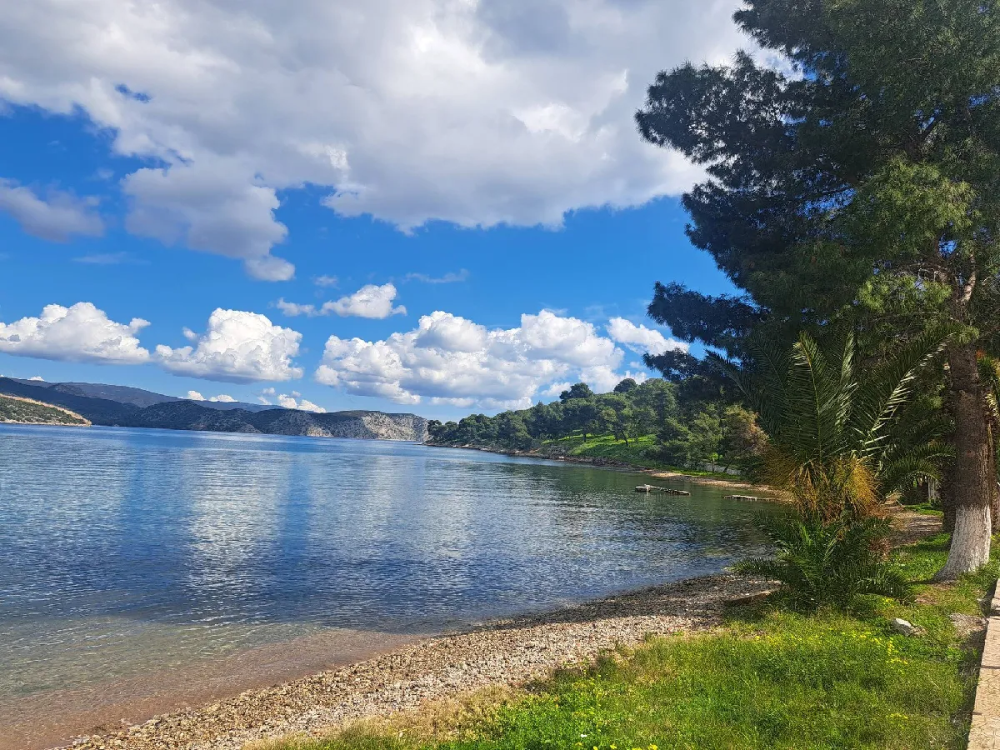
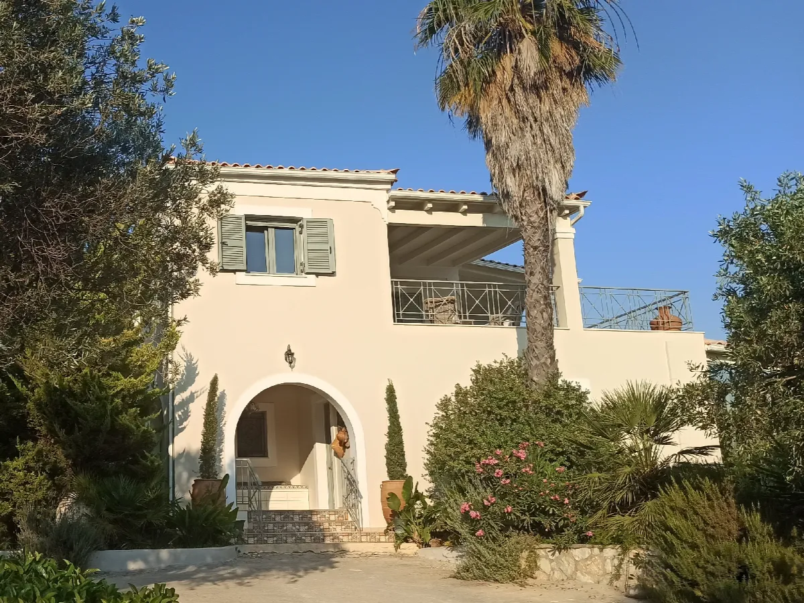

Our products
Producers from A to Z
Everything on this page is grown, harvested and bottled on our own land at Petrothalassa.

One
Honey
Honey has always enjoyed a noble path throughout the history of humanity. Its golden colour and harmonious flavours have made it a distinctive product: power, pleasure, energy, immunity. Its composition contains vitamins, minerals (calcium, phosphorus, iron, magnesium, potassium), enzymes, amino acids and organic compounds, along with pollen grains, yeast and flavonoids.
Since ancient times people were treated with honey — Hippocrates advised its use for open wounds and infections of the throat. It is better to sweeten our food with honey rather than sugar: honey contains primarily fructose and glucose, a slow sugar that suits sportspeople. Used in baking, it retains water, so honey cakes keep longer without drying out.
Our production is completely homemade and artisan. All the hives are around our farm at Petrothalassa, in the Peloponnese. We harvest with the greatest care and remove the honey by hand directly at its bottling site, to retain its subtle floral fragrance. We do not cut corners. We are producers from A to Z, and that makes all the difference.
Our honey is not heated and never comes from sown flora — it is locally foraged from the wildflowers around Petrothalassa. George has been a beekeeper for forty years; the swarms grow modestly each year, entirely dependent on the crop and the season.
Two
Olive Oil
Originally from the Mediterranean, the olive tree probably appeared 60,000 years ago in its wild form. The word “oil”, which appeared in the early 12th century, comes from the Latin oleum — olive oil. The tree is an emblem of eternity, peace and strength.
The benefits of the golden liquid include omega 9 and phenolic compounds with antioxidant properties. In the kitchen it accentuates salads, brings character to mashed potatoes and baked lamb, and excites the palate with sheep milk yoghurt and honey.
From olive to olive oil. Our harvest runs from November to January. Three phases — grinding the non-pitted olives, pressing the pulp, settling to separate the oil from the vegetation water — mingle patience and know-how. It takes about 5 kilos of olives to produce 1 litre of oil.
Choosing a good oil. Look for “extra virgin”, meaning acidity below 1%. The higher the acidity, the lower the quality. Choose a vintage oil: proof it is not a combination of two years, nor a mixture of oils from different countries.
Storing it. Keep it cool (15–20°C) and away from light. That is why we chose an elegant aluminium bottle that protects it perfectly. Our olives come exclusively from the grove of our farm at Petrothalassa, and the oil is sold directly from producer to consumer, without any intermediary. Its flavour is sweet and creamy, with a hint of freshness.
